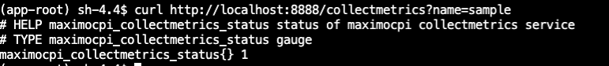

Custom Metric Collection
Maximo-CPI provides an API for collecting metrics in Prometheus format. It offers clients the flexibility to dynamically collect metrics for monitoring and troubleshooting. Clients can create custom scripts (bash or python) that output metrics in Prometheus format and utilize PodMonitor to collect these metrics through the Maximo-CPI API.
Steps how to collect custom metrics
- Create a custom script that outputs metrics in Prometheus format.
- Save the script in the
/opt/app-root/src/server/metricscriptdirectory within the Maximo-CPI pod. - Update the script permissions to
550using the command:chmod 550 <custom script name>. - Access the Maximo-CPI pod terminal and use the following command to verify the script's output via the API:
curl http://localhost:8888/collectmetrics?name=<custom script name>. Below is an sample output  - Verify Prometheus metric format:
promtool check metrics - Create and apply a PodMonitor. Below is a sample PodMonitor CR:
apiVersion: monitoring.coreos.com/v1
kind: PodMonitor
metadata:
name: maximocpi-status-metrics
namespace: maximo-cpi
spec:
namespaceSelector:
matchNames:
- maximo-cpi
podMetricsEndpoints:
- interval: 30s
path: /collectmetrics?name=sample
port: http
selector:
matchLabels:
app: mcpi
Sample Script to Collect DB2 Workload Metric
Note: the script only works when running db2 pod in the openshift. Additionally, make sure to update the namespace and pod name accordingly in the script. In the below script, the namespace is be db2u, and the pod name is c-db2wh-manage-db2u-0.
Below are the steps to collect DB2 workload metrics:
- Access the Maximo-CPI pod terminal, then change the directory to
/opt/app-root/src/server/metricscript. - Download
db2-workloadby the command:wget https://ibm-mas.github.io/mas-performance/pd/download/maximocpi-db/db2-workload - Update the permission for
db2-workloadto550. The command ischmod 550 db2-workload - Verify the metrics via the api call. The command is
curl http://localhost:8888/collectmetrics?name=db2-workload - Create and apply a PodMonitor called db2-workload
apiVersion: monitoring.coreos.com/v1
kind: PodMonitor
metadata:
name: maximocpi-db2-workload
namespace: maximo-cpi
spec:
namespaceSelector:
matchNames:
- maximo-cpi
podMetricsEndpoints:
- interval: 60s
path: /collectmetrics?name=db2-workload
port: http
scrapeTimeout: 60s
selector:
matchLabels:
app: mcpi